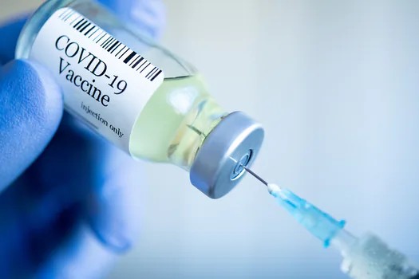
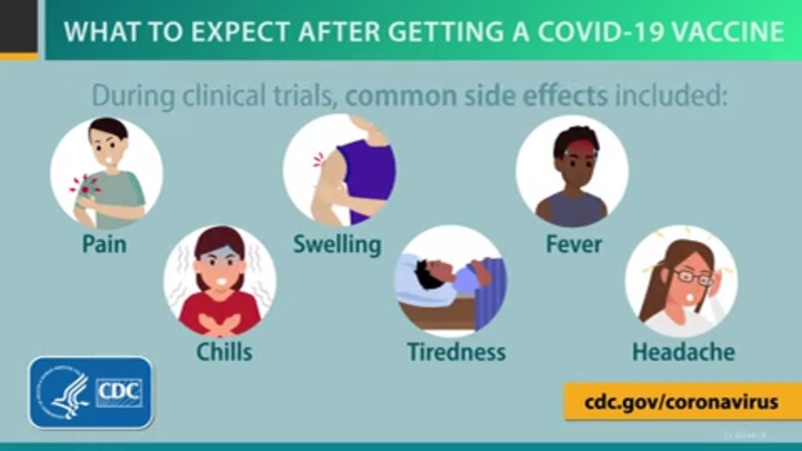

COVID-19 vaccination is effective at protecting you from getting sick.
Based on what we know about COVID-19 vaccines, people who have been fully vaccinated can start
safely doing many of the things Wisconsinites have missed during the pandemic,
like gathering with friends and family.
Being fully vaccinated does more than make you feel safe around friends, family, and neighbors.
It means feeling less stress too, and knowing that you’ve done all you can to protect your health
and the lives of all the people around you.

